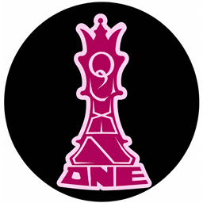
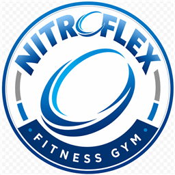
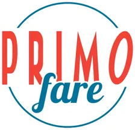

Learn
Curiosity first — studying Management Information Systems at RIT Saunders while exploring how AI agents, VR, and business tools improve real workflows.
about me →~/bret-kiefer (main) · Chester NJ ↔ Brooklyn NY
Bret Kiefer
I direct AI agents to build real business systems — Agentic Intern at Queen One, MIS at RIT Saunders, Eagle Scout.
No buzzwords — a status readout. This site itself was designed and shipped by directing AI agents, and the receipts are one scroll away.
Curiosity first — studying Management Information Systems at RIT Saunders while exploring how AI agents, VR, and business tools improve real workflows.
about me →Through internships and project work, I focus on systems that make ecommerce, operations, databases, and team collaboration smoother and easier to scale.
the work →Eagle Scout service taught me to organize people, solve physical problems, and keep a team moving toward a shared outcome with follow-through.
the record →Anyone can put "agentic" in a headline. Here's what it actually looks like — this website was planned, designed, and shipped by directing AI agents, with me as the human in the loop.
Before a line of code, the concept was stress-tested by a five-agent LLM council — contrarian, first-principles, expansionist, outsider, executor — that debated whether this redesign should exist at all.
The design system, markup, animations, and image pipeline were produced with Claude Code. I set direction, made the calls, and reviewed every change — the agent did the typing.
Everything lives in the open on GitHub — baseline committed first, redesign layered on top, full history intact. Next: a real domain and a database-backed contact flow.
view the repo →Supporting database design, collaborative workflows, and agentic business systems on-site in Brooklyn — hands-on with how AI agents plug into real operations.
2026 — presentEagle Scout project at St. Marguerite's Retreat House — mobilized volunteer teams for greenhouse framing, compost construction, and grounds restoration. Featured by the Community of St. John Baptist.
read the feature →Alpha/beta tested a VR MMO across gameplay systems, UX, performance, and balance — structured feedback that shipped in a live product.
2021 — 2022
Agentic Intern
Supporting database design, collaborative workflows, and agentic business systems in an on-site Brooklyn technology environment.

Sales Representative
Engaged prospective and current members, promoted membership options, supported front office operations, and contributed to retention.

AI Optimization / Software Configuration Intern
Collaborated on ecommerce system integration, software configuration, and Amazon optimization for smoother customer and operations experience.
Game Alpha/Beta Tester
Tested Zenith: The Last City across VR gameplay, UX, performance, and feature functionality — bugs, usability, and balance feedback.
My foundation is Eagle Scout leadership — perseverance, responsibility, and leading by example. At RIT Saunders I've built on that with management information systems, project coordination, and hands-on work with emerging tech, including a semester abroad in Dubrovnik.
I'm most interested in where AI agents and virtual reality meet real business problems — not the demo, but the deployed system people actually use.

B.S. Management Information Systems · Dean's List
Semester abroad, Management Information Systems
College preparatory and advanced diploma program
Open to conversations about agentic systems, internships, business technology, VR, and meaningful projects.